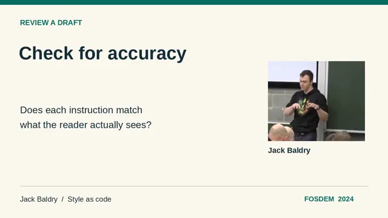

Lesson series
Long talks and classes cut into short lessons that look the same from episode one to fifty.
Edit one video the way you want it. Rendekar keeps those choices as your channel’s recipe and applies them to every new recording, in every format you publish in.

Caption style Opening title Portrait layout Brand and formatsYou edit one in Studio
Rendekar produces the rest the same way
Frames from our FOSDEM lesson series. The vertical versions are rearranged, not cropped.
10,000+ videos published with this approach since 2013
One edit sets the look for a whole series
Every file checked against its source before delivery
Open a recording in Studio. Fix captions, place them, set the opening title and the portrait layout. Approve the result.
The choices that should repeat become your channel’s recipe. It is versioned, so approved videos never change behind your back.
Every new recording runs through the recipe. You get finished videos to review, not raw files to edit.
Studio is where you shape the first video and fix the odd one out. Everything you do there is recorded against the exact source, so it can be repeated.
Point Rendekar at a folder of recordings. Each one is prepared with your recipe and appears in your review inbox as soon as it is ready.
Batch intake is rolling out with our first pilot customers.
Long talks and classes cut into short lessons that look the same from episode one to fifty.
Weekly episodes turned into captioned vertical clips with a title on the first frame.
Hours of raw footage logged once into a reviewed clip library you keep cutting from.
Rows of a spreadsheet turned into animated map and chart videos, one per row.
Each video is produced from a frozen copy of your recipe, so a later change never alters work you already approved.
Rendering and publishing are separate steps. Finished videos wait for your approval.
Each output records the source file and seconds it came from, and every file is checksum-verified.
Jobs run from a persistent queue. A stalled job is picked up again, and an old attempt can never overwrite a newer one.
From a 24-minute FOSDEM 2024 talk on technical writing we cut two short lessons, each pairing Jack Baldry’s advice with a worked example.
Adapted from Jack Baldry’s Style as code at FOSDEM 2024 under CC BY 2.0 BE. Editing and worked examples by Rendekar.
Rendekar began as the production system behind Babatorik, where it published more than 10,000 videos. Literary interviews, children’s stories and device reviews each had one template, reused across hundreds of episodes.
We are rebuilding it on modern infrastructure with the same idea at its core: teach the format once, then let every video follow it.
Studio editing and review, word-timed captions, opening titles, portrait layouts, approval of exact versions and verified rendering. Batch intake from a folder is rolling out with pilot customers. Direct posting to your social accounts is on the roadmap.
A few recordings, your logo and fonts if you have them, and an example of a video you like. We set up the recipe with you on the first one.
No. We can run Studio for you as a service: you send recordings and review finished videos.
Your footage and the finished videos stay yours. We only read your source files and never change them.
We start with a small paid pilot so you can judge the result. After that, pricing is per video or monthly, based on volume.